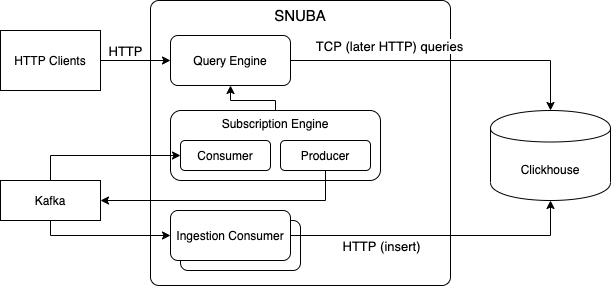
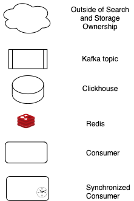
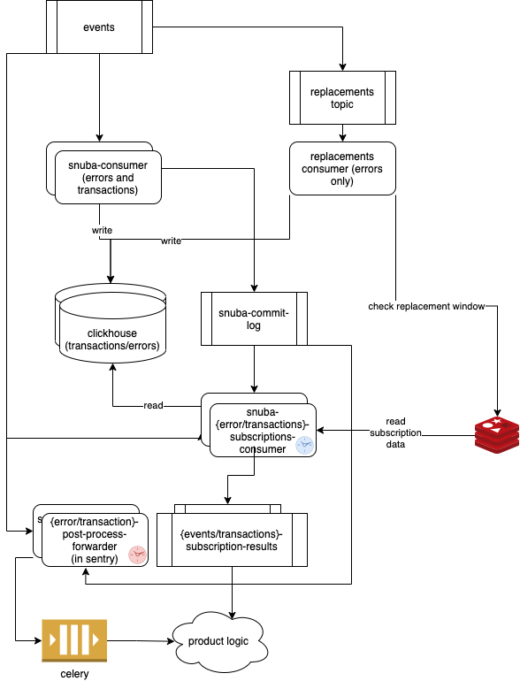
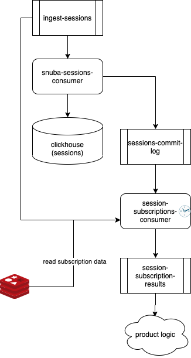
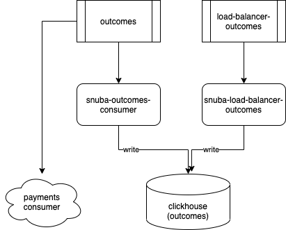

Snuba Architecture Overview¶
Snuba is a time series oriented data store backed by Clickhouse, which is a columnary storage distributed database well suited for the kind of queries Snuba serves.
Data is fully stored in Clickhouse tables and materialized views, it is ingested through input streams (only Kafka topics today) and can be queried either through point in time queries or through streaming queries (subscriptions).
Storage¶
Clickhouse was chosen as backing storage because it provides a good balance of the real time performance Snuba needs, its distributed and replicated nature, its flexibility in terms of storage engines and consistency guarantees.
Snuba data is stored in Clickhouse tables and Clickhouse materialized views. Multiple Clickhouse storage engines are used depending on the goal of the table.
Snuba data is organized in multiple Datasets which represent independent partitions of the data model. More details in the Snuba Data Model section.
Ingestion¶
Snuba does not provide an api endpoint to insert rows (except when running in debug mode). Data is loaded from multiple input streams, processed by a series of consumers and written to Clickhouse tables.
A consumer consumes one or multiple topics and writes on one or multiple tables. No table is written onto by multiple consumers as of today. This allows some consistency guarantees discussed below.
Data ingestion is most effective in batches (both for Kafka but especially for Clickhouse). Our consumers support batching and guarantee that one batch of events taken from Kafka is passed to Clickhouse at least once. By properly selecting the Clickhouse table engine to deduplicate rows we can achieve exactly once semantics if we accept eventual consistency.
Query¶
The simplest query system is point in time. Queries are expressed in a the SnQL language (The SnQL query language) or MQL language (The MQL query language) and are sent as post HTTP calls. The query engine processes the query (process described in Snuba Query Processing) and transforms it into a ClickHouse query.
Streaming queries (done through the Subscription Engine) allow the client to receive query results in a push way. In this case an HTTP endpoint allows the client to register a streaming query. Then The Subscription Consumer consumes to the topic that is used to fill the relevant Clickhouse table for updates, periodically runs the query through the Query Engine and produces the result on the subscriptions Kafka topic.
Data Consistency¶
Different consistency models coexist in Snuba to provide different guarantees.
By default Snuba is eventually consistent. When running a query, by default, there is no guarantee of monotonic reads since Clickhouse is multi-leader and a query can hit any replica and there is no guarantee the replicas will be up to date. Also, by default, there is no guarantee Clickhouse will have reached a consistent state on its own.
It is possible to achieve strong consistency on specific query by forcing Clickhouse to reach consistency before the query is executed (FINAL keyword), and by forcing queries to hit the specific replica the consumer writes onto. This essentially uses Clickhouse as if it was a single leader system and it allows Sequential consistency.
Snuba within a Sentry Deployment¶
This sections explains the role Snuba plays within a Sentry deployment showing the main data flows. If you are deploying Snuba stand alone, this won’t be useful for you.
Legend:
Deployments:
Errors and transaction:
Sessions:
Outcomes:
Errors and Transactions data flow¶
The main section at the top of the diagram illustrates the ingestion process
for the Events and Transactions Entities. These two entities serve
most issue/errors related features in Sentry and the whole Performance
product.
There is only one Kafka topic (events) shared between errors and transactions
that feeds this pipeline. This topic contains both error messages and transaction
messages.
The Errors consumers consumes the events topic, writes messages in the Clickhouse
errors table. Upon commit it also produces a record on the snuba-commit-log
topic.
Alerts on Errors are generated by the Errors Subscription Consumer. This is synchronized
consumer that consumes both the main events topic and the snuba-commit-log topic
so it can proceed in lockstep with the main consumer.
The synchronized consumer then produces alerts by querying Clickhouse and produces the result on the result topic.
An identical but independent pipeline exists for transactions.
The Errors pipeline has an additional step: writing to the replacements topic.
Errors mutations (merge/unmerge/reprocessing/etc.) are produced by Sentry on the
events topic. They are then forwarded to the replacements topic by the
Errors Consumer and executed by the Replacement Consumer.
The events topic must be partitioned semantically by Sentry project id to
allow in order processing of the events within a project. This, as of today, is a
requirement for alerts and replacements.
Sessions and Outcomes¶
Sessions and Outcomes work in very similar and simpler way. Specifically
Sessions power Release Health features, while Outcomes mainly provide
data to the Sentry stats page.
Both pipelines have their own Kafka topic, Kafka consumer and they write on their own table in Clickhouse.
Change Data Capture pipeline¶
This pipeline is still under construction. It consumes the cdc topic and fills
two independent tables in Clickhouse.